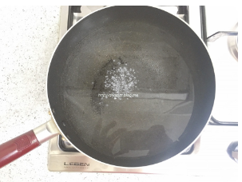
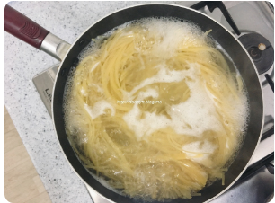
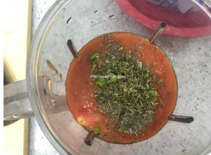
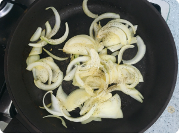
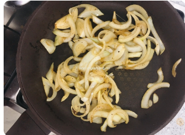
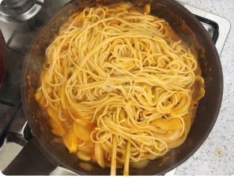
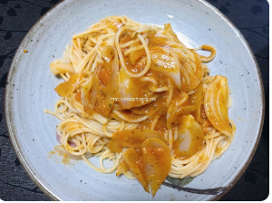

|  | 냄비에 물을 올리고 소금을 넣어요 |
|---|---|
|  | 물이 끓으면 면을 넣고 삶습니다. 취향에 따라 8~10분 동안 삶아요. |
|  | 시판 토마토 소스 반병과 토마토 2개를 껍질 벗겨 믹서에 넣고, 소금, 청양고추, 후추, 파슬리 가루를 넣고 갈아줍니다 |
|  | 팬에 올리브 오일을 두르고 후추뿌려 양파를 볶아요 |
|  | 양파가 적당히 볶아지면 갈아놓은 소스를 넣고 살짝 끓여줍니다 |
|  | 삶아진 면을 소스 끓이던 팬에 넣고 면수를 1국자 부어 소스와 면이 잘 섞이도록 볶아주세요 |
|  | 파스타를 접시에 담아 완성하세요 |